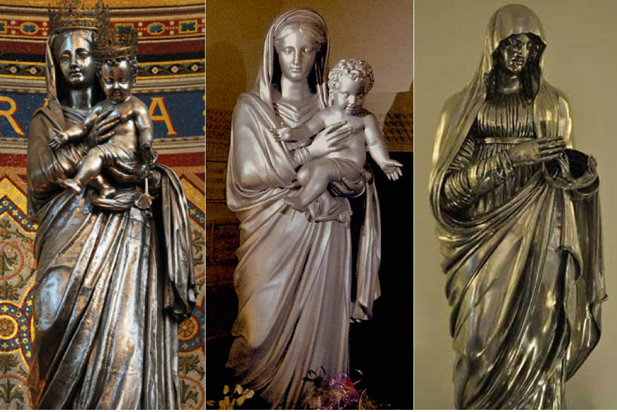

El objeto como fuente de información para la toma de decisiones de conservación-restauración. Virgen de plata del Museo Nacional del Virreinato
Jannen Contreras Vargas
Gabriela Peñuelas Guerrero
Ángel Ernesto García Abajo
Introducción
La toma de decisiones en conservación-restauración requiere de un proceso crítico desarrollado en el propio marco metodológico de la disciplina; dado que se han generado distintos modelos desde una variedad de puntos de vista, cada día sorprende menos encontrar metodologías de las ciencias sociales adaptadas reflexivamente a la conservación, entre ellas las que argumentan ―desde la valoración o la casuística― que cada bien cultural responde a situaciones especiales (Van de Vall 2005). Sin embargo, la adopción de esos modelos no implica que otros pierdan vigencia, como en el caso descrito en esta colaboración.
En el trabajo de conservación-restauración que aquí nos ocupa, la toma de decisiones se fundamentó en las características materiales del objeto: una escultura metálica denominada Virgen de plata, del Museo Nacional del Virreinato, del Instituto Nacional de Antropología e Historia (MNV-INAH, México), cuyo análisis material y su contraste con la investigación tecnológica, brindó información respecto de su origen, temporalidad y estilo; estos elementos, pese a la ausencia de otros datos relativos a su historia, permitieron tomar decisiones y determinar el camino de la intervención. Datos encontrados después de haber intervenido el objeto hicieron posible determinar cuán adecuadas fueron las decisiones tomadas.
La información y los valores en la toma de decisiones
A lo largo de la historia de la conservación-restauración se han desarrollado distintos modelos que permiten sistematizar la información para resolver la problemática de intervención y actuar en función de una lógica apropiada. Dado que se trabaja de manera interdisciplinaria, la conformación de los equipos determina que en cada modelo se dé prioridad a ciertas áreas.
En México se siguieron y adecuaron los planteamientos de Cesare Brandi, quien para la toma de decisiones favorece los aspectos estéticos y la relevancia histórica mediante la resolución de las instancias (Brandi 1999). Jaime Cama (2006) propuso incluir dos aspectos determinantes para el patrimonio cultural mexicano: una instancia funcional y otra tecnológica, con lo cual la toma de decisión se fundamenta en la información obtenida desde cada rubro, y en su relevancia para la conservación de la obra.
Hoy en día la valoración ha encontrado un eco importante en México. A partir de las investigaciones interdisciplinarias del Getty Conservation Institute (GCI, Estados Unidos) se concluyó que los ejercicios para valorar los objetos patrimoniales desde diferentes ópticas –en función de los intereses del grupo, de quién los lleva a cabo y del objetivo– abren un abanico posibilidades y remarcan el hecho de que pueden resultar conflictivas (Mason 1999). En todas estas aproximaciones los valores –como antes fueron las instancias– articulan la importancia, los mensajes y los criterios para la toma de decisiones de los restauradores. En su propuesta metodológica Mason (2002:23-27) incluye la caracterización de valores; las estrategias para realizar la valoración; la elección de la visión a incluir en el plan de conservación y la integración de ésta en la toma de decisión. En México, Medina construye su propio modelo con base en los desarrollados por Mason y Lipe (Medina 2014).
El uso de los valores se remonta a Alöis Riegl (1996), cuyos planteamientos se han retomado como guía en las decisiones de restauración de arte moderno y contemporáneo (Von der Goltz 2010). Otros han sumado a la discusión el criterio del significado, como el interesante trabajo intitulado Significance 2.0 (Russell y Winkworth 2009); Appelbaum (2007), por su parte, vierte en el estado ideal la decisión de los tratamientos acorde al estado físico en que se detente mayor cantidad de valores en el objeto.
A pesar del creciente uso de la valoración como fundamento para la toma de decisiones, existe un sinnúmero de opciones que no la incluyen; tal es el caso, por ejemplo, del modelo creado por la Foundation for the Conservation of Modern Art, basado en la condición física del objeto, su significado y la discrepancia entre ellos (Hummelen y Sillé 2005:164-172). Para otros la valoración se considera un riesgo, en la medida en que transforma “la toma de decisión en un proceso extremadamente personal” (Marçal et al. 2013:25) y proponen herramientas de las ciencias sociales para analizar la información, pues no toda ella resulta de utilidad para establecer el problema y la solución de conservación; de ahí la necesidad de una evaluación siempre debe realizar el conservador-restaurador.
La caracterización material e ideal: el estudio tecnológico
Entre las posibilidades para guiar la toma de decisiones se encuentran los estudios tecnológicos. En arqueología, por ejemplo, éstos permiten entender cadenas operativas, contextos, relaciones sociales, comportamientos, y actividades técnicas y económicas gracias al estudio de los materiales, marcas y morfología de los objetos. En conservación-restauración desde hace décadas se caracterizan los materiales, pero con frecuencia son presentadas como una lista de resultados carente de juicios y relaciones críticas; esto impide que se aprovechen de manera suficiente como conocimiento útil para la toma de decisiones. Quizá esto se debe al hecho de que al conservador-restaurador le ha parecido redundante o considera que al presentar así los resultados de análisis –como supone lo haría un profesional de las ciencias duras– está siendo más científico y profesional.
De esta forma, la “aséptica” y “objetiva” caracterización material continúa con una propuesta de intervención que aparece casi por generación espontánea, o simplemente con base en un guión preestablecido: limpieza, resane y reintegración. Por esto suele ser acusado de seguir recetas de manera maquinal, cuando –por ejemplo– la decisión de por qué, cómo, qué y hasta dónde limpiar requiere la evaluación de una amplia variedad de elementos, que jamás resulta automática o irreflexiva si la conduce un verdadero profesional de la conservación-restauración.
Así como en la medicina el radiólogo y el químico analítico proporcionan datos muy valiosos, pero siempre el médico los analiza y decide para el bienestar de un enfermo, en materia de conservación-restauración la intervención, y lo que lleva aparejada de toma de decisiones y de conocimiento, es el núcleo de nuestra actividad (Barrio 2015). Las decisiones operativas que se toman suelen estar basadas en las conclusiones logradas a partir de las caracterizaciones y de otra serie de elementos, pero los razonamientos implicados rara vez se expresan.
Virgen de plata
Antecedentes a la fase de intervención
Durante el semestre de agosto a diciembre de 2009, las entonces estudiantes Fernanda Martínez, Ana Lanzagorta y Mariana Méndez, junto con el equipo docente del Seminario Taller de Restauración de Metales de la Escuela Nacional de Conservación, Restauración y Museografía (STRM-ENCRyM), llevaron a cabo la intervención de la escultura de bulto redondo conocida como Virgen de plata del MNV-INAH.
Gran parte de la superficie exterior de la escultura estaba recubierta por una capa oscura característica de la corrosión formada por sulfuros de plata. La peculiaridad de sus rasgos, la ausencia de piezas semejantes en contexto mexicano y la información de la tarjeta de control del MNV-INAH apuntaban a un origen europeo y factura en el siglo XIX. Al saber que durante ese periodo en Europa estuvo en boga la producción de acabados oscuros intencionales, similares a la capa presente en la obra, determinar si ésta era intencional o producto de un proceso de corrosión natural se volvió la pregunta central para decidir el sentido la intervención.
La escultura
La escultura es de estilo neoclásico, casi de tamaño natural, muestra a una mujer de pie sobre una base rectangular, cubierta con un manto en actitud de sostener algo sobre su brazo izquierdo, presuntamente la figura de un infante, y tocarlo con la mano derecha. Desafortunadamente, esa figura está ausente y deja un hueco por el cual puede verse el interior de la pieza. La documentación del MNV-INAH señala que está manufacturada con plata, pero el interior muestra un color rosado característico del cobre.
Figura 1. Vista frontal de la escultura Virgen de plata del MNV-INAH. Fuente Martínez et al. 2009.
Al respecto de la línea de vida, los datos se reducían al registro de la escultura como parte de los objetos de la Hacienda Galindo (Amealco, Querétaro), perteneciente a los hermanos Rulé Cárdenas entre 1939 y 1959, dándole uso de museo privado (Prudencio 2000: 3). La obra fue parte del acervo del INAH como resultado de un decomiso en la década de 1960; inicialmente se le trasladó al Museo Nacional de Historia (MNH-INAH, México) y después al MNV-INAH, que en 2009 la confiaría a la ENCRyM para ser restaurada con miras a la exposición Plata forjando México.
Caracterización material y técnica de manufactura
Las primeras acciones consistieron en la documentación y el análisis material de la obra. Se comenzó con la inspección macroscópica global, con lupas de aumento y microscopio estereoscópico1 que permitió registrar los quintos o punzonados: BERIHOLON, la leyenda DOUELE, las letras N y B con la imagen de un galgo y el número 5 (Martínez et al. 2009); además de la conformación por martillado y las uniones de elementos, se identificaron los metales constitutivos gracias al color, brillo y la presencia de algunos productos de corrosión característicos.
Se consignó que la obra está constituida por veinte secciones cuyas formas y volúmenes se lograron por martillado, armadas principalmente por uniones mecánicas: más de trescientos tornillos y tuercas de latón (Martínez et al. 2009:298). Las secciones más complejas, como brazos y manos, también fueron hechas en secciones, pero unidas mediante ensambles dentados afianzados con soldadura.
Después se realizó un análisis puntual no invasivo para comprobar la composición elemental: espectrometría de fluorescencia de rayos X (FRX).2 Los resultados confirmaron que la parte interior de la lámina está constituida por cobre casi puro, mientras el exterior es de plata con bajo contenido de cobre, es decir, plata ley. De este modo toda la escultura está hecha con láminas bimetálicas, excepto el rostro, realizado únicamente con plata ley (Martínez et al. 2009: 293-330).
Para entender mejor la técnica de factura y responder a la interrogante planteada respecto de la naturaleza de los productos de corrosión –intencionales o naturales–, se tomaron muestras para análisis metalográfico de dos puntos representativos: el manto y el rostro.3 Este muestreo no significó mayor daño a la obra, debido a su pequeño tamaño y a que se tomaron de los dobleces de unión, en zonas internas no visibles.
El análisis permitió comprobar que el recubrimiento de plata sólo se encuentra en el exterior, que el grosor de la lámina de cobre es de aproximadamente un milímetro y que el recubrimiento es unas diez veces más delgado: del orden de 90 micras. La lámina de cobre muestra la estructura habitual del trabajo en frío: granos equiaxiales de tamaño pequeño y abundantes maclas sin señales de deformación; ni curvadas, ni dobladas, lo cual indica que tras el martillado la lámina fue calentada y produjo una recuperación de la estructura cristalina. El recubrimiento es bastante uniforme y mantiene un espesor constante, sin desprendimientos o fallas en la interfaz de unión entre el cobre y la plata. La unión de los dos metales por difusión es apenas perceptible pero muy buena; esto indica que el proceso de difusión fue rápido, pues no dio tiempo suficiente para que los átomos de plata y cobre se difundieran de manera más visible en la estructura del metal complementario.
Bajo el microscopio se observó que la capa de corrosión es muy delgada, su espesor no es uniforme y se extiende extendida de forma heterogénea en la muestra, lo cual permitió suponer que no se trataba de un recubrimiento intencional.

Figura 2. Micrografías metalográficas donde se ilustra de izquierda a derecha: el grosor de la lámina de plata y de la de cobre, donde se observan las maclas del trabajo del metal y el grosor irregular de la capa de corrosión.
Estudio tecnológico
Materiales constitutivos y técnica de manufactura
El estudio tecnológico sólo puede hacerse a partir de la caracterización material, así que una vez obtenidos los resultados correspondientes el siguiente paso fue relacionar el hecho material con la información tecnológica.
Aun cuando la obra pertenece al acervo del MNV-INAH, el que no fuera sólo de plata confirmó que su producción no es virreinal, pues durante el virreinato los distintos procesos de recubrimiento metálico solían emplearse para lograr dorados; aunque la plata tenía un precio elevado, no fue del todo raro que se realizaran esculturas de dimensiones considerables con ese material, y como ejemplo se tienen varias esculturas de procedencia americana encontradas en el tesoro de la Catedral de Sevilla, España.
Todavía en el siglo XIX la demanda de objetos de lujo por parte de la creciente población adinerada europea, producto de la revolución industrial, fomentó la realización de diversos recubrimientos de plata (Turner 1993:218). Cabe mencionar que en el mismo periodo el otrora territorio de la Nueva España vivió entre guerras, por lo cual extraer plata para la producción de objetos suntuarios se vio seriamente limitada. Entre esos materiales escasos estaba la hoja de lámina Sheffield –o doublé, como se le conoció en Francia–con la que se facturó la escultura en cuestión (Turner 1993:218).Esta lámina bimetálica puede describirse como un sándwich: una base relativamente gruesa de cobre cubierta por una más delgada capa de plata, unidas por presión y calor.
Recubrimientos similares fueron usados desde la antigüedad para dorar hilos metálicos (Jiménez 2012) y hacer monedas falsas (Bouilhet 1998:66). En 1742 Charles Bolsover descubrió un modo eficiente para el recubrimiento por laminado. La historia más popular narra que se trató de un hallazgo fortuito: mientras intentaba arreglar una pieza de cubertería con la hoja de plata y el mango de cobre, la sobrecalentó por accidente y provocó que la parte de plata se fundiera; al intentar corregir este efecto mediante laminado, descubrió que ambos metales se extendían por igual y se mantenía la relación de espesores (Newman 1987:282). Bolsover llamó a su proceso recubrimiento de cobre laminado (rolled copper plate). Hasta 1771 se registró el término Scheffield plate en honor de su descubridor y de Joseph Hanckok, quien lo popularizó en 1750, pues ambos eran moradores de esa ciudad inglesa (Newman 1987:282).
Como se comprobó con el análisis metalográfico, la unión de las láminas se debe a un proceso de calentamiento que causa la difusión de los átomos de cada metal en la lámina complementaria sin requerir aporte de metal alguno (Scott 1991:140; Bouilhet 1998:212). El calentamiento periódico durante la conformación también cumplió la función de permitir que la lámina se pudiera deformar plásticamente sin agriarse.4
Debido a su naturaleza bimetálica era más complicado elaborar piezas con esta lámina, pero al resultar menos costosa su uso se popularizó y, a diferencia de los objetos de plata pura, no tenían que pagar impuestos especiales a la corona británica (Newman 1987:283). Además, gracias al par galvánico formado, la parte de plata se corroe menos, lo cual ayudó a su éxito comercial. Sin embargo, la aparición de los recubrimientos por electrodeposición implicó mayor facilidad de manufactura y menores costos de producción, por lo que hacia 1840 esa técnica de hecho dejó de utilizarse y se le empezó a conocer como antigua lámina Sheffield (old Sheffield plate) para diferenciarla de producciones electroplateadas, más baratas y que también incluyeron Sheffield en su nombre (Newman 1987: 282).
Origen y temporalidad de producción
A pesar de que no había un requerimiento espacial para marcar piezas elaboradas con lámina Sheffield, los artesanos ingleses adoptaron marcas que usaron desde 1755;5 en particular, una corona permitía distinguir la producción inglesa de las piezas francesas y austriacas.6 Aun cuando no fue posible determinar el origen de la escultura aquí analizada, se descartó la procedencia del Reino Unido, pues no se encontró similitud alguna con los punzonados británicos.
Por otro lado, la peculiar historia de la lámina Sheffield permitió establecer una ventana para la producción de la obra entre 1750 y 1840. Dato muy importante que permitió descartar la intencionalidad de la capa oscura superficial, pues la patinación artificial, denominada plata oxidada, plata negra o argent noir –desarrollada por Pierre-Émile Jeannest– se usó a partir de 1850 (Newman 1987:231), sobre todo en superficies electroplateadas (Rudoe 1993; Newman 1987:235).
Orientaciones para la intervención
La información histórica y social disponible antes y durante la intervención fue bastante limitada, y habría dificultado tomar decisiones excepto por la obtenida directamente del objeto y de la indagación tecnológica; así se logró determinar que:
La escultura está constituida por una lámina bimetálica de cobre y plata, excepto el rostro elaborado en plata ley.
Aunque la datación de metales mediante análisis instrumentales es complicada o imposible, permitió tener datos fiables respecto de la temporalidad de elaboración y origen, al menos por descarte. Así la escultura:
se debió producir entre 1750 y 1840,
es europea, pero no de origen inglés.
La capa de corrosión en la superficie de la escultura es producto de la reacción natural con el medio, no promovida con la intención de añadir alguna característica estética, artística o simbólica al objeto. Esto se afirma con base en:
la ausencia de corrosión en la parte interna de los dobleces de unión y los resultados del análisis metalográfico,
la ventana de tiempo encontrada para la producción de la obra, contrastada con la información de que la pátina g de las obras de plata se puso de moda a partir de 1850; es decir 10 años después de la fecha más tardía posible (1840),
el emplear lámina Sheffield buscaba aprovechar su apariencia blanca y brillante, característica de la plata.
Su uso actual corresponde a la dinámica propia de exhibición como obra de museo.
Aquí se debe recordar que la mayoría de los productos de corrosión de la plata son estables químicamente; cuando recubren la superficie la evolución de la corrosión es tan lenta que puede considerarse pasiva y hasta protectora, y no implican un riesgo para la estabilidad química o la resistencia física de la obra. Así, en los objetos de este metal la principal motivación para una limpieza es de carácter estético (Contreras 2012:329).
Con base en lo anterior, se estableció que el objetivo de la limpieza sería la recuperación del brillo y color propios de la plata y se decidió eliminar la capa de corrosión, excepto en aquellas partes en que su presencia favoreciera la apreciación más clara de formas y volúmenes. Otro aspecto importante es que no se planteó la reposición de la figura faltante, ante la total falta de evidencias, y porque en su carácter de obra de museo no requiere de ese elemento para ser entendida.
Intervención
Al conocer la estabilidad de los productos de corrosión de la plata, la escultura se limpió de manera selectiva, conservando los productos de corrosión en aquellas partes en que su presencia favoreciera la apreciación más clara de formas y volúmenes –decisión con la que tal vez Brandi habría estado de acuerdo–. Las zonas que requerían ser oscurecidas por no tener corrosión fueron entonadas con una capa de Paraloid B72 coloreada con negro de humo, y aplicada por aspersión.
El cuerpo docente del STRM-ENCRyM, junto con el equipo de restauración y museografía del MNV-INAH, se enfrentó a un dilema referente a la aplicación de la capa de protección. Hoy en día el STRM-ENCRyM promueve aprovechar las posibilidades de la conservación preventiva y, siempre que sea posible, adecuar las atmósferas de exposición para los objetos de plata evitando las capas de protección, pues suelen causar problemas de aireación diferencial (Thickett y Hockey 2003) que fomenta acentuada corrosión localizada. Sin embargo, debido a las dimensiones de la obra, las dificultades que implicaba crearle espacios de exhibición cerrados y la movilidad proyectada, se decidió poner una gruesa película transparente de Paraloid B72, aplicado por aspersión en varias capas, con especial cuidado para no dejar espacios libres que pudieran funcionar como zonas anódicas.
Investigación continuada y evaluación
A pesar de considerar la evaluación autocrítica un factor decisivo para la evolución de la profesión, en pocas ocasiones se cuenta con los recursos económicos, humanos y temporales para llevarla a cabo. En este caso los pocos elementos disponibles para decidir la intervención motivaron a parte de los docentes a continuar la investigación una vez concluida la intervención, para verificar si las hipótesis planteadas eran correctas. Así, fue posible determinar que en Francia, a partir de 1770, se elaboraron láminas similares a la Sheffield a la que nombraron doublé o plaqué, por constituirse de dos láminas: una de cobre y otra de plata (Bouilhet 1986); la única posible diferencia con la obras inglesas es que la lámina de soporte también podía ser de latón (Arminjon y Bilimof 1998).
En la Francia del siglo XVIII las exigencias para las obras hechas con estas láminas consistían en llevar la leyenda Doublé, las iniciales del artesano o la casa orfebre, y un pequeño elemento figurativo, además de un número que indicaba el grosor de la lámina de plata (Arminjon y Bilimof 1998), donde el valor del número indica el grosor: cuanto mayor el número, más gruesa la lámina. Con esta información fue posible determinar que el sello que se leía DOUELE en realidad dice DOUBLE; y gracias a la medición hecha en el estudio metalográfico, sabemos que el número 5 marcado en la escultura corresponde a un espesor de recubrimiento de alrededor de 90 micrómetros. Esto, aunado a que los otros cuños cumplen las exigencias francesas, permite corroborar que no se trataba de una pieza inglesa sino francesa, y ya que en Francia la técnica se desarrolló desde 1770, la producción de la obra en cuestión podía haberse dado sólo a partir de esa fecha.
Un par de años después, buscando en internet catálogos franceses de subastas de arte y antigüedades, se encontró otra obra de metal doublé con marcas iguales a las de esta escultura –las letras NB y el galgo echado–, así se pudo saber que las iniciales NB corresponden al punzón de Nicolas Bertholon, y que la leyenda BERIHOLON corresponde a su apellido.
Figura 3. Detalles de los cuños del orfebre Nicolas Bertholon. A la izquierda el de la virgen del MNV, a la derecha del catálogo de subastas de Crédit Municipal de Paris.
Otro dato muy relevante encontrado en esos sitios fue que este orfebre registró su punzón en 1821 (Credit Municipal de Paris 2008), y que su taller se ubicó en el número 30 de la calle Michel-Le-Comte, en París, entre 1820 y 1840 (liveauctioneers 2013). Esta información permite acotar la ventana de producción entre 1821 y 1840 e identificar al orfebre creador de la escultura.
Se mencionó la historia del arte como herramienta de información y el posible modelo de inspiración parece haber sido encontrado en la virgen de plata ubicada en el altar mayor de la basílica de Nuestra Señora de la Guardia en Marsella, realizada por el artista local Jean-Baptiste Chanuel en 1837, rememorando aquélla hecha en 1651 por Jean-Pierre Cortot y perdida durante la Revolución Francesa (Basilique Notre -Dame de la Garde 2014). De ser así, la fecha de producción de la Virgen de plata se podría delimitar entre 1837 y 1840 (Basilique Notre-Dame de la Garde 2014).
 Figura 4. De izquierda a derecha: comparativa de las esculturas de Notre-Dame de la Garde, Marsella, Francia, en el altar principal y en la cripta, y de la del MNV. Imágenes tomadas de: visite.marseille.fr, bibleetnombres.online.fr e inah.gob.mx.
Resulta interesante también que la escultura de Cortot fue conocida como Virgen del ostensorio porque se diseñó para colocar en su mano alternativamente la figura del niño o una custodia (Basilique Notre-Dame de la Garde 2014); el hecho de haber copiado este diseño puede explicar en parte la pérdida de la figura del infante.
Evaluación de la intervención
Para saber si un tratamiento fue exitoso, tras algún tiempo se requiere de la vinculación entre quienes realizan la intervención y los custodios del patrimonio. En este caso, las condiciones se dieron y la oportunidad no se dejó pasar. El personal del MNV-INAH generosamente participaba a los docentes del STRM-ENCRyM la situación de la obra en cuanto a la estabilidad de la capa de protección antes, durante el recorrido de la exposición Plata forjando México y una vez finalizada la muestra. El procedimiento permitió concluir que las decisiones de intervención tomadas fueron correctas, tanto respecto de la limpieza selectiva como de la capa de protección, en virtud de que todo el proceso pudo realizarse sin presentar problemas de corrosión.
Conclusiones
Al confrontar los resultados obtenidos de la caracterización material de la escultura con la información tecnológica e histórica recabada, sobre todo en relación con la técnica de manufactura, se puede afirmar que 1) la escultura se hizo con lámina Sheffield o metal doublé; 2) se trata de una producción francesa del taller de Nicolas Bertholon, elaborada entre 1821 y 1840; 3) la obra posiblemente se inspiró en la Virgen de Nuestra Señora de la Guardia en Marsella, obra de Jean-Baptiste Chanuel; 4) también se logró establecer la orientación y los límites de la intervención, al determinar que no contaba con un acabado intencional generalizado, y 5) por ello lo más adecuado fue tratar de recuperar el aspecto lustroso de la plata, acorde a su uso y contexto actual.
Se obtuvo información a distintos niveles a partir de los punzonados, la coloración, los materiales, la unión por difusión de los metales, la heterogeneidad de los productos de corrosión, y por ningún motivo se buscó realizar un estudio iconográfico de un objeto descontextualizado. De haber procedido al margen de una metodología, pudo haberse procurado recubrir la totalidad de la obra con corrosión de plata, lo cual habría aportado a la obra un aspecto falso y desprovisto de su sentido original.
Este caso permite asegurar que la obra en sí misma es la fuente de información por excelencia, y en tanto sea interpretada y aprovechada correctamente permite tomar decisiones de intervención adecuadas. Una de las formas de lograr lo anterior es vía el estudio tecnológico. Los resultados cualitativos y cuantitativos de la caracterización material no son útiles ni determinantes por sí mismos, en tanto no exista un gestor de información con experiencia en el área en cuestión como el conservador-restaurador; éste debe relacionarlos con la información histórica, tecnológica y de significado, compararlos con la producción de obras similares, analizar los mecanismos de alteración y estudiar los usos pasados, presentes y proyectados.
Este ejemplo demuestra que la generación de información no se detiene en las etapas previas a la intervención, ni se limita a presentar los datos de la caracterización material, continúa durante el proceso de intervención y debería mantenerse una vez concluido el proceso. De ahí la necesidad de que el conservador-restaurador haga partícipe a la sociedad de los razonamientos que guiaron su intervención y de los resultados obtenidos, pero también es necesario proveer las condiciones para realizar evaluaciones posteriores a la intervención.
Referencias
Appelbaum, Barbara.
2007. Conservation Treatment Methodology. Butterworth- Heinemann, Oxford.
Arminjon, Catherine y Michele Bilimof.
1998. Métal, vocabulaire technique. Éditions du Patrimoine Nationale, París.
Basilique Notre-Dame de la Garde
“Les 5 statues de Notre-Dame de la Garde”. Recuperado de http://www.notredamedelagarde.com/Les-5-statues-de-Notre-Dame-de-la.html en abril 2014.
Barrio, Joaquín.
2015 Comunicación personal.
Chandler, Harry.
1998. Metallurgy for the non–metallurgist. ASM International, Warrendale (Pa).
Cama, Jaime.
2006. Tetela del Volcán, un ejercicio de conservación. INAH, México.
Contreras, Jannen.
2012. “Reflexiones sobre la limpieza de plata”. En El sueño de El Dorado: estudios sobre la plata iberoamericana (siglos XVI-XIX). Núria Salazar Simarro, Jesús Paniagua Pérez y Moisés Gámez (eds). Universidad de León/INAH, León.
De la Torre, Martha.
2002. Assesing the Values of Cultural Heritage. The Getty Conservation Institute, Los Ángeles.
Crédit Municipal de Paris.
2008. “Lot no. 10: Chauffe-plat XIXème”. Recuperado de http://www.creditmunicipal.fr/hotel-des-ventes/resultat-des-ventes/lot.html?LotID=38630&VenteID=127 en abril 2014.
Hummelen Ijsbrand y Dionne Sillé.
2005. Modern Art: Who Cares? Archetype Books, Ámsterdam.
liveauctioneers.com.
2013. “Nicolas Bertholon Doublé Plate Tureen”. Recuperado de
http://www.liveauctioneers.com/item/21775424_nicolas-bertholon-doubl-plate-tureen en abril 2014.
Marçal Helia; Rita Macedo, Andreia Nogueira y Antonio Duarte.
2013. “Whose decision is it? Reflections about a decision making model base on qualitative methodologies”. CeROArt. Recuperado de http://ceroart.revues.org/3597 el 16 marzo de 2013.
Martínez Rocha, Fernanda; Ana Lanzagorta y Mariana Méndez.
2009. “Virgen”. Informe de los trabajos de restauración realizados sobre piezas metálicas provenientes del Museo Nacional del Virreinato (vol. II, pp. 293-330). STRM-ENCRyM, México.
Mason, Randy.
1999. Economics and Heritage Conservation. Los Ángeles, The Getty Conservation Institute.
Newman, Harold.
1987. An Illustrated Dictionary of Silverware. Thames and Hudson, Londres.
Riegl, Alöis.
1996.“The modern cult of monuments: its essence and its development”. En Historical and Philosophical Issues in the Conservation of Cultural Heritage (pp. 69-83). Nicholas Price et al. (eds.). The Getty Conservation Inastitute, Los Ángeles.
Rudoe, Juddy.
1993. “Oxidized silver in the 19th century: The documentary evidence”. En S. La Niece y P. Craddock. Metal Plating and Patination. Cultural, Technical and Historical Developments. Buttherworth-Heinemann, Oxford.
Russell, Roslyn y Kylie Winkworth.
2009. Significance 2.0 A Guide to Assessing the Significance of Collections. Collections Council of Australia, Canberra.
Scott, David.
1991. Microstructure of Ancient and Historic Metals. The Getty Conservation Institute, Los Ángeles.
Thickett, D. y Hockey M.
2003. “The effects of conservation treatments on the subsequent tarnishing of silver”. EnProceedings of Conservation Science 2002 (pp. 155-161). J. H. Townsend, K. Eremin y A. Adriaens (eds.). Archetype Pubs, Londres.
Turner, Eric.
1993. “Silver plating in the 18th century”. En Metal Plating and Patination. Cultural, Technical and Historical Developments. S. La Niece y P. Craddock (eds.). Buttherworth-Heinemann, Oxford.
Van de Vall, Renée.
2005. “Painful decisions: Philosophical considerations on a decision-making model”. En Modern Art: Who cares? (pp. 195-200)., Archetype, Amsterdam.
Von der Goltz, Michael.
2010. “Alois Riegl´s denkmalswerte: A decision model and contemporary art conservation?”. En Theory and Practice in the Conservation of Modern and Contemporary Art (pp. 50-61). Ursula Schädler Saub y Angela Weyer (eds.)., Archetype, Ámsterdam.
Notas al pie
1 El registro bajo microscopio estereoscópico fue hecho con ayuda del químico Víctor Santos Vásquez. )
2 El doctor José Luis Ruvalcaba Sil, del Instituto de Física de la Universidad Nacional Autónoma de México (IF-UNAM, México), realizó las medidas usando un equipo AMPTEK con tubo de rayos X de molibdeno y detector de silicio x123, el diámetro del haz fue de 0.5 mm con un tiempo de radiación de 1 minuto, y una penetración superficial con una resistencia de 0.20 miliamperios. )
3 Ángel García Abajo, especialista en química metalúrgica, y la estudiante Fernanda Martínez realizaron el muestreo, montaje, tratamiento de las muestras, el ataque químico y el análisis metalográfico.
4 Agriado: fenómeno en el que los metales, al ser trabajados mecánicamente, se endurecen y se rompen (Chandler 1998: 23)
5 Pueden consultarse en el sitio silvercollection.it y en diversos catálogos de marcajes ingleses.
6 Dado que este marcaje también se usaba para la plata sólida, fue prohibido en 1825.
Como citar esta colaboracin:
Apellido, nombre (ao), Ttulo del artculo, en Archivo Churubusco, ao 1, nmero 1, disponible en -direccin en internet-, consultado -da, mes, ao-.
Ir al cielo